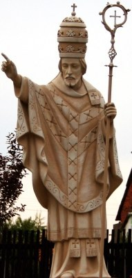

St. Callistus
St. Callistus I (217-222), once a slave and later the counselor of Pope Zephyrinus, had been an overseer of a cemetery on the Appian Way belonging to the Roman Church (now the Cemetery of St. Callistus). Hippolytus and Tertullian—the one a schismatic and the other a heretic—have given a most unfavorable picture of Callistus, sharply criticizing him for laxity in readmitting to the Church those who had committed sins against chastity. But in view of their personal hostility, their comments must be received with many reservations. Callistus died a martyr.
McSorley, Joseph. An Outline History of the Church by Centuries (from St. Peter to Pius XII). 2nd Ed. 1944.